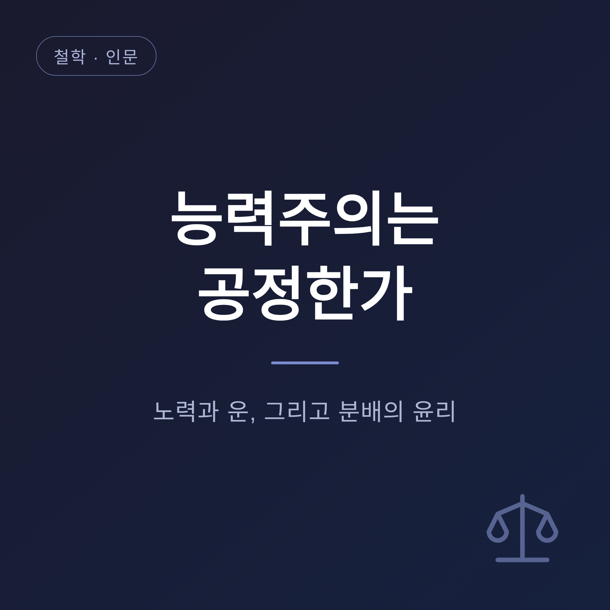
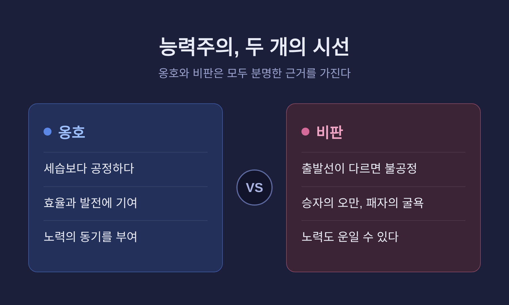
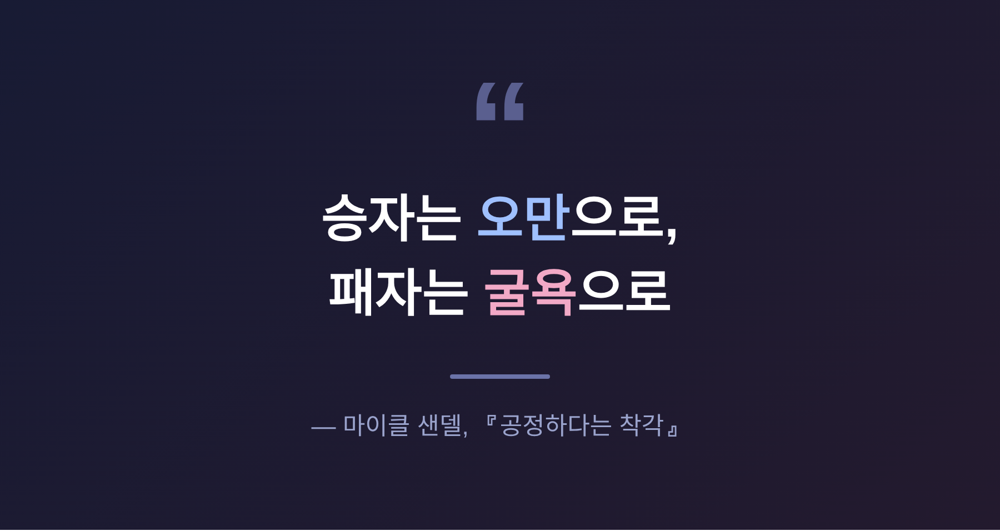
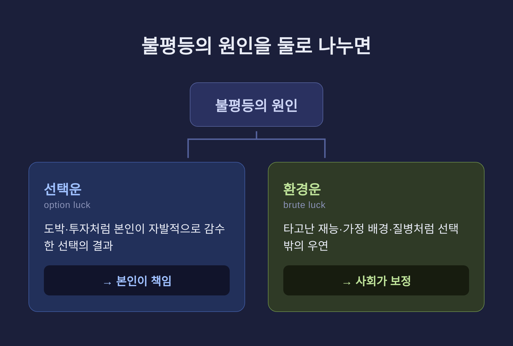

이번 글에서는 능력주의가 정말 공정한지를 정리해 보겠습니다. "노력하면 성공한다"는 말은 오래도록 우리의 상식이었습니다. 그러나 그 상식이 정말 공정한지, 노력과 운은 어떻게 얽혀 있는지, 철학은 분배의 문제를 어떻게 다뤄 왔는지 함께 살펴보려 합니다.
먼저 결론의 방향만 짧게 말씀드립니다. 능력주의는 한쪽으로 단정할 수 있는 문제가 아닙니다. 옹호할 이유와 의심할 이유가 모두 분명합니다.
능력주의는 출신이나 신분이 아니라 개인의 능력으로 평가받자는 원리입니다.
태어난 가문이 사람의 자리를 정하던 시대가 있었습니다. 능력주의는 그 세습의 벽을 깨려고 등장한 약속이었습니다. "실력으로 증명하라"는 말은, 한때 가장 진보적인 외침이었습니다.
옹호하는 쪽의 논리는 분명합니다. 능력에 따른 보상은 노력과 효율, 탁월함을 끌어냅니다. 인재를 알맞은 자리에 배치하는 장치로 작동하고, 사람들이 더 애쓰게 만드는 동기가 됩니다. 보상이 능력과 무관하다면, 굳이 힘써 노력할 이유는 약해질 것입니다.

철학자 마이클 샌델은 『공정하다는 착각』에서 이 상식을 정면으로 의심합니다.
샌델이 보는 능력주의는 '세속적 성공과 도덕적 자격의 결합'입니다. 성공한 사람은 그럴 자격이 있고, 실패한 사람도 그럴 만하다는 판단이 슬며시 따라붙습니다.
문제는 그다음입니다. 승자는 자신의 승리를 온전히 제 힘으로 여깁니다. 그래서 겸손을 잃고 오만에 빠지기 쉽습니다. 패자는 자신의 실패를 스스로 탓하며 굴욕과 분노로 내몰립니다. "하면 된다"는 말은, 누군가에겐 칼이 됩니다.
샌델은 대안으로 '노동의 존엄'을 이야기합니다. 사람을 경쟁의 사다리로 줄 세우는 대신, 공동체에 기여하는 일 그 자체를 존중하자는 것입니다.
다만 샌델의 결론이 '겸손'에 그쳐, 구조적 불평등을 풀기엔 부족하다는 비판도 함께 있습니다. 이 점은 솔직히 인정해야 합니다.

존 롤스는 한 발 더 들어갑니다.
타고난 재능과 신분은 지극히 우연한 변수입니다. 내가 노력해서 얻은 것이 아닙니다. 그렇다면 그 우연이 만든 결과를 온전히 내 몫이라 주장할 수 있을까요.
롤스는 '무지의 베일'을 제안합니다. 내가 어떤 처지에 태어날지 모른다고 가정할 때, 우리는 어떤 분배를 택하겠는가. 그가 내놓은 답이 차등의 원칙입니다. 불평등은 가장 불리한 처지의 사람에게 가장 큰 이익이 돌아갈 때에만 정당하다는 것입니다.
로널드 드워킨은 운을 둘로 나눕니다. 스스로 감수한 선택의 결과인 '선택운'과, 선택과 무관한 '환경운'입니다. 도박이나 투자의 결과는 본인이 책임집니다. 그러나 타고난 재능, 가정 배경, 질병처럼 내 선택 밖의 불운은 보정의 대상이 됩니다.
핵심은 한 문장으로 모입니다 — 선택에서 온 불평등은 정당화되지만, 운에서 온 불평등은 그렇지 않습니다.

비판자들은 더 멀리 나아갑니다.
재능만 운이 아닙니다. 끈기 있게 노력하는 능력조차도 타고난 기질과 자라온 환경의 산물일 수 있습니다. 만약 그렇다면, "노력했으니 받아 마땅하다"는 말의 근거마저 흔들립니다.
물론 반론도 있습니다. 모든 것을 운으로 환원하면, 개인의 책임과 행위의 주체성이 사라집니다. 재능과 노력의 경계도 아직 또렷이 합의되지 않았습니다.
이 논쟁은 한국 사회에서 특히 뜨겁습니다.
예전에는 '시험으로 줄 세우는 것'이 가장 공정해 보였습니다. 지금은 그 시험의 출발선부터 다르다는 사실이 드러나고 있습니다. 청년 세대는 절차의 공정을 강하게 요구합니다. 동시에 부의 대물림과 계층 고착화는 출발선 자체를 어긋나게 만듭니다.
같은 규칙이라도, 출발점이 다르면 그것을 공정이라 부르기 어렵습니다.
정리하면 이렇습니다.
능력주의는 세습을 깬 진보적 이상이자, 동시에 새로운 불평등을 정당화하는 알리바이가 되기도 합니다. 노력과 운은 깔끔히 나뉘지 않고, 분배의 윤리는 그 경계 위에서 계속 흔들립니다.
저는 이렇게 생각합니다 — "공정은 결과가 아니라, 출발선을 묻는 일이다."
능력주의가 공정하냐고 물으신다면, 저는 이렇게 답하겠습니다. 그 질문을 멈추지 않는 사회가, 그나마 공정에 가장 가깝다고 말입니다.